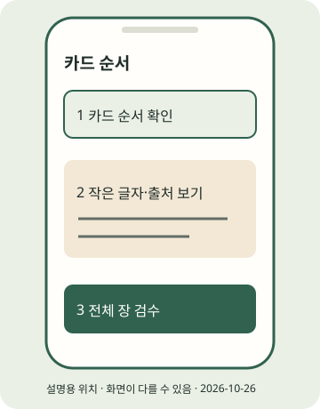

(실습) 실습편 / 4
(실습) 4. 뉴스카드 캐러셀 만들기
순서와 글자를 확인한 카드 파일을 만든다.
2026년 10월 조사 기준 · 확인일 2026-10-26 · 근거: PRAC-08 PRAC-10 PRAC-25 API-06 · E2E 한눈에 보기
진행 기록은 자바스크립트를 켜면 이 브라우저에 저장합니다.
이 실습의 흐름

STEP 01 · 카드 다시 만들기
카드 다시 만들기
지금 하는 일
검증한 문안을 이미지에 반영합니다.
왜 하는지
JSON을 고쳐도 이미지가 자동으로 바뀌지 않기 때문입니다.
따라 하기
- 렌더링은 문안·설정을 실제 이미지와 영상 파일로 만드는 작업입니다. 아래 명령은 카드와 릴스를 함께 다시 만듭니다.
cards/card-01.png부터 표지 → 본문 → 마무리 순서로 엽니다. PNG와 같은 내용의 JPEG(.jpg)도 있습니다.- 문안은 copy.json, 현재 출력물의 색·음성 설정은
output/first-post/config.json을 수정합니다. config.yaml 변경은 새 실행부터 반영됩니다.
이렇게 보이면 성공
검수 대기: …/output/first-post/REVIEW.md가 출력됩니다. cards/에 card-01부터 card-05까지 PNG와 JPEG가 있습니다.
이렇게 보이면?
- 변경이 안 보이면 현재 폴더의 copy.json·config.json을 수정했는지 확인하세요.
- 렌더링은 기존 승인을 지웁니다. 실패 후에도 새 검수 없이는 게시할 수 없습니다.
Windows
.venv\Scripts\python.exe run_pipeline.py render output/first-postmacOS
python run_pipeline.py render output/first-postSTEP 02 · 휴대폰 크기로 모든 장 확인
휴대폰 크기로 모든 장 확인
지금 하는 일
글자·크롭·출처를 카드마다 확인합니다.
왜 하는지
첫 장만 좋아 보이고 나머지가 잘리는 문제를 막습니다.
따라 하기
- 모든 PNG/JPEG를 열어 제목·요점·출처·합성 고지를 확인합니다. 길면 문장의 조건과 원출처를 보존하며 줄이고 다시 render합니다.
- 키트 카드 1080×1350은 제작 선택입니다. API 이미지는 JPEG이며 최대 8MB, 비율 4:5~1.91:1, 너비 320~1440px라는 별도 규격을 따릅니다(API-06). PNG를 API 입력으로 그대로 쓰지 않습니다.
- 이 실습은 카드 5장입니다. API 혼합 캐러셀 최대 20개 근거와 앱 선택 화면의 미확인은 구분합니다(PRAC-10). 오늘은 이미지 카드 묶음부터 완성하세요.
이렇게 보이면 성공
작은 화면에서도 다섯 카드의 글자·출처가 읽히고 순서가 맞습니다. 실제 앱 선택은 실습 7에서 확인합니다.
이렇게 보이면?
- 제목이 잘리면 글을 줄여 재생성하고 전체를 다시 확인하세요.
- 앱 미리보기 크롭이 달라지면 실습 7에서 각 장을 점검하고 게시를 보류해 수정하세요.
Windows
이 단계는 Windows와 무관한 휴대폰 또는 웹 작업입니다. 휴대폰 OS와 앱 버전의 화면 차이는 공식 도움말로 확인하세요.macOS
이 단계는 macOS와 무관한 휴대폰 또는 웹 작업입니다. 휴대폰 OS와 앱 버전의 화면 차이는 공식 도움말로 확인하세요.지금 내 손에 있는 것
순서와 글자를 확인한 카드 파일을 만든다. 아래 단계 확인을 모두 마쳤는지 E2E에서 다시 봅니다. 선택하지 않은 포맷·심화는 미완료로 남겨도 됩니다.